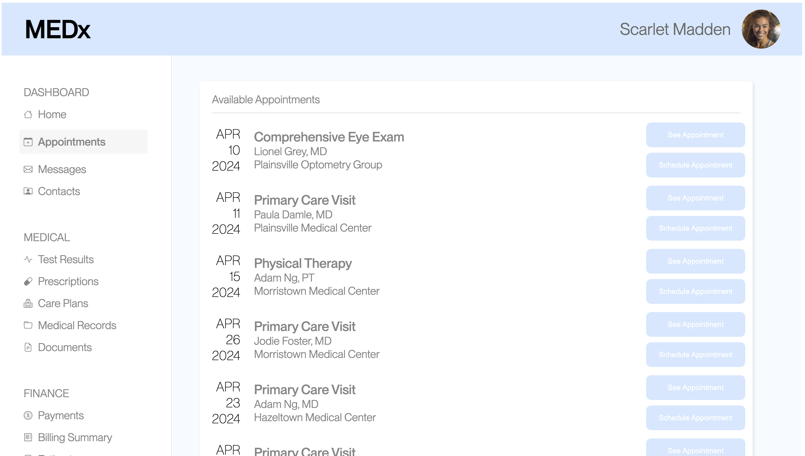
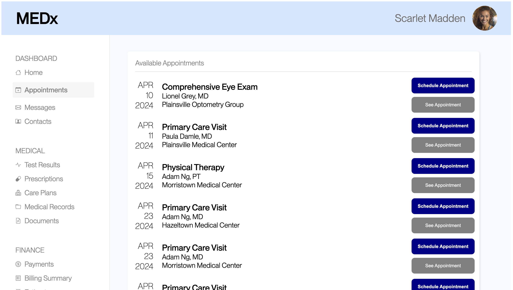

In an increasingly digital world, even slight changes in a website's UI can lead to millions of dollars in revenue differences or dramatically different user perceptions of a company's reputability. Therefore, utilizing A/B testing to statistically analyze the impacts small changes can have on the user experience is critical for high traffic websites.
Through a small-scale experiment, 24 users' performances in "scheduling an appointment with Adam Ng, MD at Morristown Medical Center on April 23, 2024" were evaluated across two different versions of the website.
Version A (which was created by the TAs of the course and is shown below) utilized relatively poor color contrast and an unintuitive page ordering.
Version B (which I created and is also shown below) aimed to improve upon the perceived user difficulties that came from interacting with version A. Key changes included changes to the appointment detail text colors, button background colors, and appointment reordering (to be in chronological order).
Based on the kinds of data collected, three metrics were chosen and hypotheses were formed for each of them with regards to user performance across the two versions.
Definition: The frequency with which users click something else on the page before finding the correct button for the task
The misclick rate on version A of the website design is the same as the misclick rate on version B of the website design.
I predict that I will end up rejecting the null hypothesis as version A had poor color contrast on the buttons/button text, which made it difficult to distinguish between the “Schedule Appointment” and “See Appointment” buttons. Similarly, there was also poor color contrast on the text distinguishing between different locations and dates of similar kinds of appointments.
The misclick rate on version A of the website design will be higher than the misclick rate on version B of the website design.
The reasoning behind this alternative hypothesis is that version B of the website design intentionally improved color contrast on the general descriptions of the appointments (i.e. by changing the text color to black instead of light gray) and used different colors to distinguish between the “Schedule Appointment” and “See Appointment” buttons.
Definition: Time spent on the webpage for each user group
The time spent by users on version A of the website design is the same as the time spent by users on version B of the website design.
I predict that I will end up rejecting the null hypothesis as version A listed the appointments in a non-chronological order (by date), which made it difficult to immediately identify the correct appointment slot. I believe this non-chronological layout will cause users to stay on the page for longer as they try to identify the correctly dated appointment to book and then actually book it.
The time spent by users on version A of the website design will be higher than the time spent by users on version B of the website design.
The reasoning behind this alternative hypothesis is that version B of the website design intentionally rearranges the ordering of the appointments to make everything flow chronologically. There is also the improved color contrast on the general descriptions of the appointments (i.e. by changing the text color to black instead of light gray) and different colors to distinguish between the “Schedule Appointment” and “See Appointment” buttons as previously mentioned.
Definition: Distance, in pixels, of the users' mouse movements across the screen during their sessions
The distance, in pixels, of users' mouse movements on version A of the website design is the same as the distance, in pixels, of users' mouse movements on version B of the website design.
I predict that I will end up rejecting the null hypothesis as version A had similar text color across all the different features on the page (i.e. similar gray font color used on the sidebar as well as for the appointment descriptions), which might lead to users unnecessarily hovering over various parts of the website when trying to locate the correct appointment.
The distance, in pixels, of users' mouse movements on version A of the website design will be higher than the distance, in pixels, of users' mouse movements on version B of the website design.
The reasoning behind this alternative hypothesis is that version B of the website design changes the appointment descriptions to being in black (as opposed to gray), better drawing users' attentions to this part of the page. Furthermore, the “Schedule Appointment” buttons are given a more vibrant blue background to also draw users into navigating to these buttons instead of the “See Appointment” buttons. Better visual navigation of the website should directly lead to less distance in terms of user mouse movements (as people tend to move the mouse in accordance with where their visual focuses are on the page).
After forming the above hypotheses, a series of statistical tests were conducted on each metric to evaluate their respective validities.
One-tailed t-test was chosen. For the misclick rate data, all TRUE values were converted to 1 and all FALSE values were converted to 0 in order to find the average rate of misclicking. Because this misclick rate is a continuous metric, a t-test makes sense. Our alternative hypothesis also specifically looks at the misclick rate for version A being higher (not just different) from the misclick rate for version B, so a one-tailed (instead of two-tailed) test makes sense.
Based on the p-value of 0.000636 (which is less than the standard threshold of alpha = 0.05), the difference (and specifically looking at version B having a lower misclick rate) between versions A and B with respect to the misclick rate is statistically significant.
The t-score of -3.498 tells us that our sample average misclick rate on version B was 3.498 standard deviations away from the sample average misclick rate on version A. Given that 95% of samples fall within 2 standard deviations of the mean (assuming a normal distribution), this extreme t-score likely tells us that there is a statistically significant difference across versions of the website.
The degrees of freedom of 35.855 tells us the approximate number of independent variables that can be estimated in our analysis. Because we had sample sizes of 24 + 24 = 48 participants across both versions of the website, we would naturally expect our degrees of freedom to be 48 - 2 or 46 in this scenario. However, because we are doing a 2 sample t-test and the misclick rate variances across our 2 samples varies significantly (the variance on version A is roughly 3.5 times the variance on version B), we apply a weighted average of the sample variances to our regular degrees of freedom calculation. Therefore, we are estimating a lower number (around 35.855) of independent variables in our analysis.
The p-value of 0.000636 gives the probability of obtaining our sample average misclick rate on version B to be 8.33% given that our null hypothesis is true (i.e. that the misclick rate on version B is the same as on version A, which yielded an average misclick rate of 50%). A general threshold for not rejecting our null hypothesis is for the p-value to be above 0.05 (a standard alpha value), but because this p-value is far below that threshold, we reject the null hypothesis.
We reject the null hypothesis formed above based on the t-scores and p-values being outside of our acceptable ranges.
One-tailed t-test was chosen. We are looking at time on the page, which is a continuous metric, so a t-test makes sense. Our alternative hypothesis also specifically looks at the time on the page for version A being higher (not just different) from the time on the page for version B, so a one-tailed (instead of two-tailed) test makes sense.
Based on the p-value of 0.00000000218 (which is less than the standard threshold of alpha = 0.05), the difference (and specifically looking at version B having a lower time on page) between versions A and B with respect to the time on page is statistically significant.
The t-score of -8.648 tells us that our sample average time on page on version B was 8.648 standard deviations away from the sample average time on page on version A. Given that 95% of samples fall within 2 standard deviations of the mean (assuming a normal distribution), this extreme t-score likely tells us that there is a statistically significant difference across versions of the website.
The degrees of freedom of 25.711 tells us the approximate number of independent variables that can be estimated in our analysis. Because we had sample sizes of 24 + 24 = 48 participants across both versions of the website, we would naturally expect our degrees of freedom to be 48 - 2 or 46 in this scenario. However, because we are doing a 2 sample t-test and the time on page variances across our 2 samples varies significantly (the variance on version A is roughly 17 times the variance on version B), we apply a weighted average of the sample variances to our regular degrees of freedom calculation. Therefore, we are estimating a lower number (around 25.711) of independent variables in our analysis.
The p-value of 0.00000000218 gives the probability of obtaining our sample average time on page on version B to be 9667.04 (in milliseconds) given that our null hypothesis is true (i.e. that the average time on page on version B is the same as on version A, which yielded an average time on page of 36,139.46 milliseconds). A general threshold for not rejecting our null hypothesis is for the p-value to be above 0.05 (a standard alpha value), but because this p-value is far below that threshold, we reject the null hypothesis.
We reject the null hypothesis formed above based on the t-scores and p-values being outside of our acceptable ranges.
One-tailed t-test was chosen. We are looking at the distance of mouse movements, which is a continuous metric, so a t-test makes sense. Our alternative hypothesis also specifically looks at the distance of mouse movements for version A being higher (not just different) from the distance of mouse movements for version B, so a one-tailed (instead of two-tailed) test makes sense.
Based on the p-value of 0.0000328 (which is less than the standard threshold of alpha = 0.05), the difference (and specifically looking at version B having a smaller distance of mouse movements) between versions A and B with respect to the distance of mouse movements is statistically significant.
The t-score of -4.843 tells us that our sample average distance of mouse movements on version B was 4.843 standard deviations away from the sample average of distance of mouse movements on version A. Given that 95% of samples fall within 2 standard deviations of the mean (assuming a normal distribution), this extreme t-score likely tells us that there is a statistically significant difference across versions of the website.
The degrees of freedom of 23.439 tells us the approximate number of independent variables that can be estimated in our analysis. Because we had sample sizes of 24 + 24 = 48 participants across both versions of the website, we would naturally expect our degrees of freedom to be 48 - 2 or 46 in this scenario. However, because we are doing a 2 sample t-test and the distance of mouse movements variances across our 2 samples varies significantly (the variance on version A is roughly 105 times the variance on version B), we apply a weighted average of the sample variances to our regular degrees of freedom calculation. Therefore, we are estimating a lower number (around 23.439) of independent variables in our analysis.
The p-value of 0.0000328 gives the probability of obtaining our sample average distance of mouse movements on version B to be 2530.534433 (in pixels) given that our null hypothesis is true (i.e. that the average distance of mouse movements on version B is the same as on version A, which yielded an average distance of mouse movements of 8386.217274 pixels). A general threshold for not rejecting our null hypothesis is for the p-value to be above 0.05 (a standard alpha value), but because this p-value is far below that threshold, we reject the null hypothesis.
We reject the null hypothesis formed above based on the t-scores and p-values being outside of our acceptable ranges.
Across each version of the website, we collected 24 data points of users attempting to book an appointment.
For version A, the 24 users had a mean misclick rate of 50% (with variance of 26.09%), a mean time on page of 36,139.46 milliseconds (with variance of 212,313,712.7 ms), and a mean distance of mouse movements of 8386.22 pixels (with variance of 34,754,589.59 px).
For version B, the 24 users had a mean misclick rate of 8.33% (with variance of 7.97%), a mean time on page of 9667.04 milliseconds (with variance of 12,555,828.56 ms), and a mean distance of mouse movements of 2530.53 pixels (with variance of 332,035.14 px).
The consistent trend across all three metrics tells us that users had a more difficult time locating where to navigate on the page, what was relevant on the page, and had poor accuracy in clicking the correct button to schedule the appointment once after they had navigated to the relevant part of the page. We also see that version A affected different users significantly differently compared to version B, shown by the significantly higher variances on version A.
In a real-world setting, we would definitely aim to switch from version A of our website to version B in order to better facilitate the appointment-booking process for future users.
Despite my initial predictions being in-line with the results of the analyses, I was still surprised by how high the degree of statistical significance was across all three metrics. Although the experiment was small in scale and somewhat biased in its execution, the statistical analyses still illustrate the importance of testing user interactions with an interface, even late in the development process. A few small changes to certain colors (to create better contrast) or in how some things are ordered on the screen can lead to vast improvements in the user experience, which can only ultimately benefit the companies or organizations behind the website. With websites enabling companies to have larger and larger reaches, A/B testing is critical to ensuring that users continue to revisit and use certain features of a website in the future.